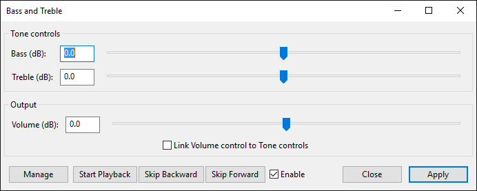

Bass and Treble
From Audacity Development Manual
- Accessed by:
- 
Bass (dB)
The amount of gain (amplification above 0 dB or attenuation below 0 dB) to bass (low) frequencies. Set this to a positive amount to boost the bass, or to a negative amount to reduce the bass. Bass gain is applied to frequencies lower than 1000 Hz, with the most gain being applied to frequencies about 100 Hz or lower.
Treble (dB)
The amount of gain (amplification above 0 dB or attenuation below 0 dB) to treble (high) frequencies. Set this to a positive amount to boost the treble, or to a negative amount to reduce the treble. Treble gain is applied to frequencies higher than 1000 Hz, with the most gain being applied to frequencies above 10000 Hz.
Volume (dB)
This increases or reduces the overall level by up to +/- 30 dB.
- Applying a boost to the bass or treble will tend to increase the overall level. As a result, the final level may be pushed so high that it distorts (clips). To avoid clipping, reduce the level by setting the Volume control lower.
- Reducing the bass or treble may make the final level too quiet. To compensate for the lower level, set the Volume control higher.
Link Volume control to Tone controls
When this is enabled (checked), adjusting either the Bass or Treble controls will automatically adjust the Volume control so as to lessen the change in the resulting output level.
Technical details
Bass and Treble is a two-band Equalizer.
- The Bass control is a low-shelf filter with the half gain frequency at 250 Hz.
- The Treble control is a high-shelf filter with the half gain frequency at 4000 Hz.
- All slider controls have a gain range of +/- 30 dB.
Real-time preview
This effect supports Real-time preview - effect settings can be changed while playing and listening to the result in real-time. Text-based button controls are provided as in the image above. The Enable checkbox acts like a live "Bypass" control. Uncheck the checkbox  Enable to hear the audio without the effect applied, and recheck the box
Enable to hear the audio without the effect applied, and recheck the box  Enable to hear the effect applied at its current settings.
Enable to hear the effect applied at its current settings.
The button accesses choices to add, delete, import or export presets for this effect and to set options for this effect. For details see Manage presets.